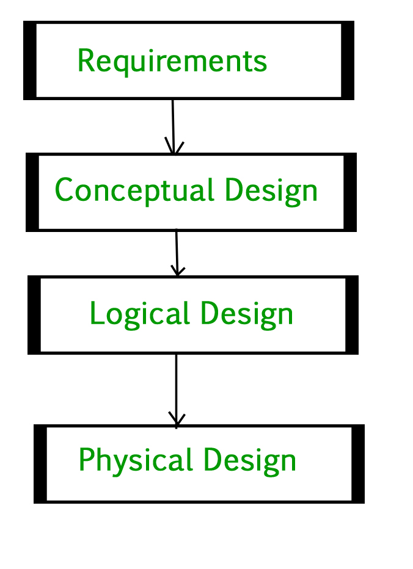

Database Management System – Introduction | Set 1
DBMS 3-tier Architecture
DBMS 3-tier architecture divides the complete system into three inter-related but independent modules as shown in Figure 1.
{kind=link}
Figure 1
Physical Level: At physical level, the information about location of database objects in data store is kept. Various users are DBMS are unaware about the locations of these objects.
Conceptual Level: At conceptual level, data is represented in the form of various database tables. For Example, STUDENT database may contain STUDENT and COURSE tables which will be visible to users but users are unaware about their storage.
External Level: An external level specifies a view of the data in terms of conceptual level tables. Each external level view is used to cater the needs of a particular category of users. For Example, FACULTY of a university is interested in looking course details of students, STUDENTS are interested in looking all details related to academics, accounts, courses and hostel details as well. So, different views can be generated for different users.
Data Independence
Data independence means change of data at one level should not affect another level. Two types of data independence are required in this architecture:
Physical Data Independence: Any change in physical location of tables and indexes should not affect conceptual level or external view of data. This data independence is easy to achieve and implemented by most of the DBMS.
Conceptual Data Independence: The data at conceptual level schema and external level schema must be independent. This means, change in conceptual schema should not affect external schema. e.g.; Adding or deleting attributes of a table should not affect the user’s view of table. But this type of independence is difficult to achieve as compared to physical data independence because the changes in conceptual schema are reflected in user’s view.
Phases of database design
Database designing for a real world application starts from capturing the requirements to physical implementation using DBMS software which consists of following steps shown in Figure 2.
Conceptual Design: The requirements of database are captured using high level conceptual data model. For Example, ER model is used for conceptual design of database.
Logical Design: Logical Design represents data in the form of relational model. ER diagram produced in conceptual design phase is used to convert the data into Relational Model.
Physical Design: In physical design, data in relational model is implemented using commercial DBMS like Oracle, DB2.
{kind=link}
Advantages of DBMS
DBMS helps in efficient organization of data in database which has following advantages over typical file system.
- Minimized redundancy and data consistency: Data is normalized in DBMS to minimize the redundancy which helps in keeping data consistent. For Example, student information can be kept at one place in DBMS and accessed by different users.
- Simplified Data Access: A user need only name of the relation not exact location to access data, so the process is very simple.
- Multiple data views: Different views of same data can be created to cater the needs of different users. For Example, faculty salary information can be hidden from student view of data but shown in admin view.
- Data Security: Only authorized users are allowed to access the data in DBMS. Also, data can be encrypted by DBMS which makes it secure.
- Concurrent access to data: Data can be accessed concurrently by different users at same time in DBMS.
- Backup and Recovery mechanism: DBMS backup and recovery mechanism helps to avoid data loss and data inconsistency in case of catastrophic failures.
Also see